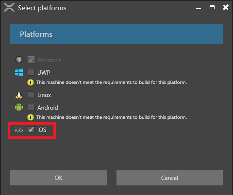
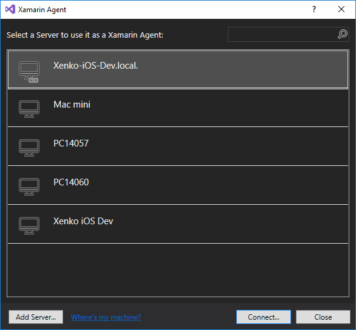
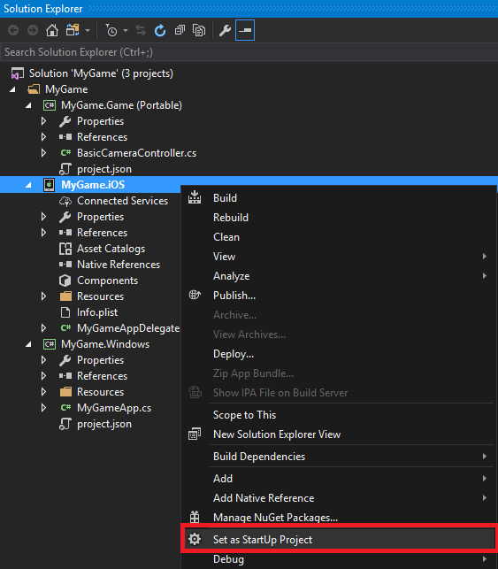
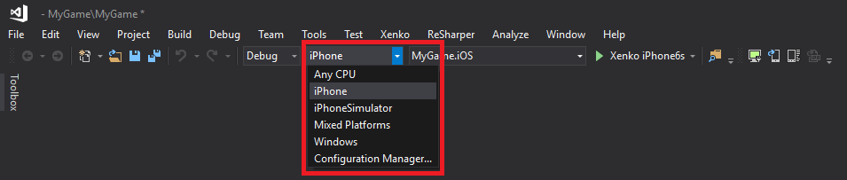
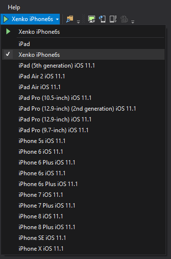
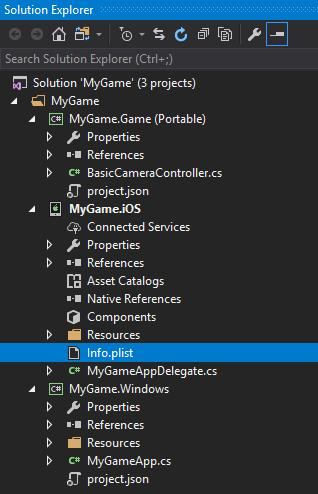
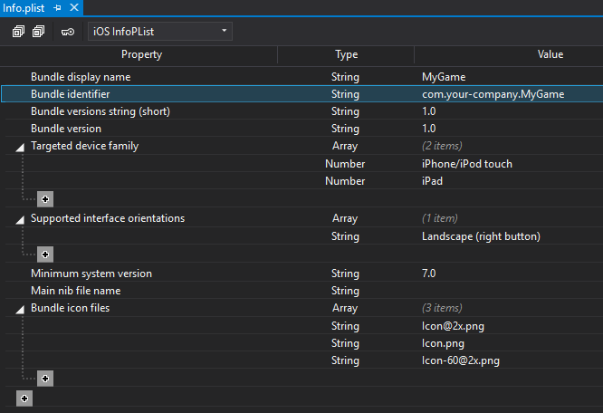
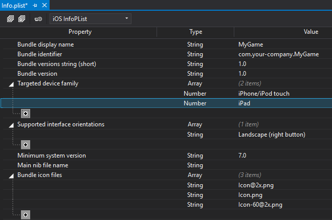
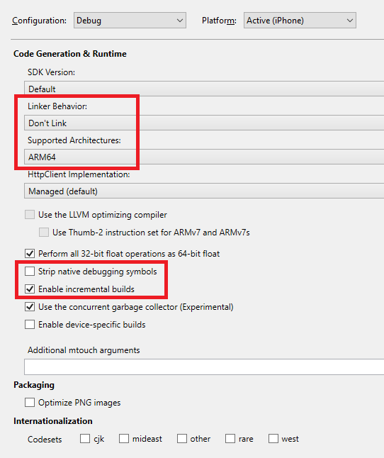

iOS
ゲームを iOS デバイスでデプロイするには、Xamarin がインストールされた Mac に接続するためのデバイスが必要です。
PC と Mac に Xamarin がインストールされていることを確認します。Xamarin のインストールとセットアップの手順については、Xamarin のドキュメントを参照してください。
iOS がプロビジョニングされていることを確認します。手順については、Xamarin ドキュメントの Xamarin.iOS のデバイス プロビジョニング を参照してください。
iOS プラットフォームが自身の Stride プロジェクトに追加されていることを確認します。追加するには、Game Studio でソリューションを右クリックし、[Update package] > [Update platforms] を選択して iOS をオンにします。

Game Studio でプラットフォームを追加する手順の詳細については、プラットフォームの追加と削除 を参照してください。
Visual Studio で、自身のソリューションを開きます。
Tip
Game Studio から Visual Studio でプロジェクトを開くには、Game Studio のツールバーにある
 (Open in IDE) をクリックします。
(Open in IDE) をクリックします。Visual Studio のツールバーにある をクリックします。

すると、Xamarin Agent が開きます。

Xamarin 経由で Mac に接続します。手順については、Xamarin ドキュメントの Xamarin.iOS for Visual Studio の概要 を参照してください。
ソリューションエクスプローラー で、プロジェクトを右クリックし、[スタートアップ プロジェクトに設定] を選択します。

ソリューションエクスプローラー のメニューから [iPhone] を選択して、物理 iOS デバイス（iPad を含む）でビルドするか、あるいは [iPhoneSimulator] を選択してシミュレーター用にビルドします。シミュレーターはあなたのマシン上で iOS デバイスをエミュレートしますが、難点がいくつかあります（後述）。

Visual Studio のツールバーから、ビルドしたい iOS デバイスを選択します。

ソリューションエクスプローラー から、
info.plistを開きます。
リリースビルドを作成したい場合には、[bundle identifier] を設定します。これは、あなたのアプリケーション用の一意な ID です。

iPad にもデプロイしたい場合には、[Targeted device family] の下の をクリックします。

iOS デバイスでのビルドの高速化
iOS デバイスでのビルドには時間がかかります。以下がその理由です。
Mac では、さまざまなデバイスに対応したコードを事前に作成する必要があります（AOT）。
Apple のサンドボックスシステムでは、パッケージを段階的に更新することができないため、Mac では変更のたびにアプリケーションをデバイスにまるごとデプロイし直す必要があります。
より高速にコードをコンパイルするには、ソリューションエクスプローラーで iOS プロジェクトを右クリックし、[プロパティ] を選択します。

- [Linker Behavior] > [Don't link] を選択します。
- [Supported Architectures] から、デバッグデバイスのアーキテクチャーだけを選択します。
- [Strip native debugging symbols] を無効にします。
- [incremental builds] を有効にします（ある実行から別の実行へと変化できるコードは、AOT だけです)。
詳細については、Xamarin ドキュメントの iOS ビルドのしくみ を参照してください。プロファイリングについては、Xamarinドキュメントの Instruments を使用した Xamarin.iOS アプリケーションのプロファイリング を参照してください。
毎回の再デプロイを高速化するために、デバッグパッケージをできるだけ小さくします。
Game Studio で、プロジェクトに含まれる テクスチャーのサイズ を削減します。
不要なアセットバンドルを削除します。
シーンを同時にロードするのではなく、1 つずつテストします。
実デバイスの代わりに、iPhoneシミュレーターでアプリケーションをデバッグすることができます。ただし、シミュレーター上では実行速度が遅く、また、レンダリング時にいくつかのアーティファクトが発生するため、リアルタイムグラフィックスのデバッグに使用することはお勧めできません。
iOS でシェーダーをコンパイルする
iPhone デバイスで Stride シェーダーを OpenGL シェーダーに変換するのには時間がかかるので、リモートで（つまり Game Studio で）変換することをお勧めします。
おすすめのワークフローは次の通りです。
Windows でアプリを実行します。シェーダーのパーミュテーション（不要な機能を生成しないようにしたバージョン）が作成されます。

Game Studio で新しいシェーダーをインポートします。これにより、エフェクトログが生成されます。

iOS 上で、ゲームを保存し、実行します。
理想的には、すべてのシェーダーのパーミュテーションをリモートで作成するので、デバイス上で変換する必要はありません。しかし、サポートされている画面解像度などの違いにより、新しいパーミュテーションが発生する可能性があります。iOS でシェーダーをリモートでコンパイルする方法などの詳細は、シェーダーのコンパイルを参照してください。